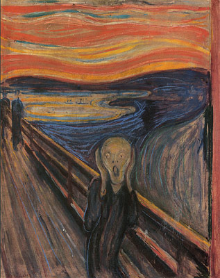

התמונה המקורית:
התמונה המשופרת:
ההתרשמות שלנו מן התמונה היא שכיום בחיים שלנו, לפעמים אנו רוצים לומר כל מיני דברים, אך משתיקים אותנו. לא תמיד אנו יכולים להביע את דעותינו. הדמות נמצאת ליד הגלים ומתמזגת איתם ואנו חושבות שזה דבר המעד על זרימה עם הזרם, והחיים כיום וכמו שהגלים שקטים גם אנחנו לפעמים. דבר נוסף, זה יכול להגיד שלפעמים הרצונות או התלונות שלנו נשטפות עם הגלים ולא מקבלות יחס. יתר על כן, הצללים המרוחקים שרואים בתמונה מסמלים את היחס הקר וההתרחקות מהמצוקה של הדמות. לכן, אנחנו יצרנו תמונה, שכמו בחיים המודרנים של היום כולם עסוקים בעידן הטלפונים, אז הדמות בתמונה מחיקה טלפון ביד והוא מנסה לצעוק ולדבר אך משהו משתיק אותו ולא נותן לו להתבטא, הרקע עם צבעים רועשים של כעס מלווה בעשן. ומרחוק ניתן לראות דמויות שלא עוזרות לו ממש